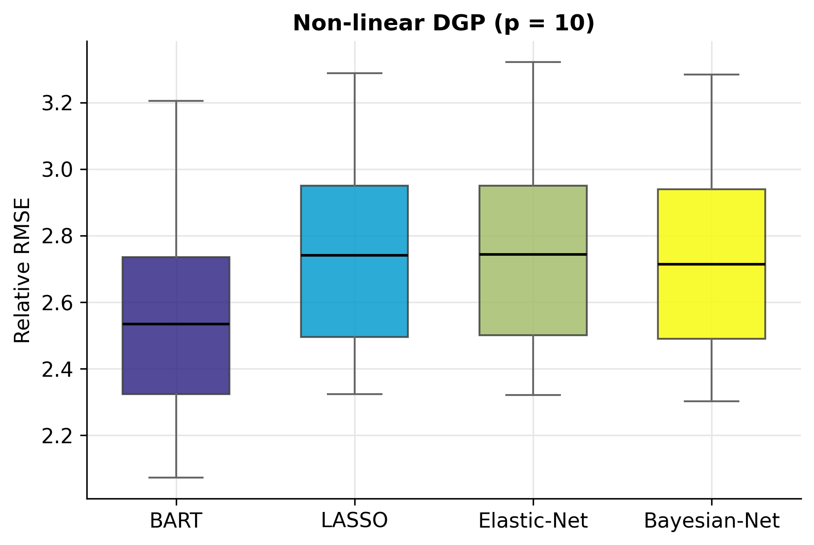
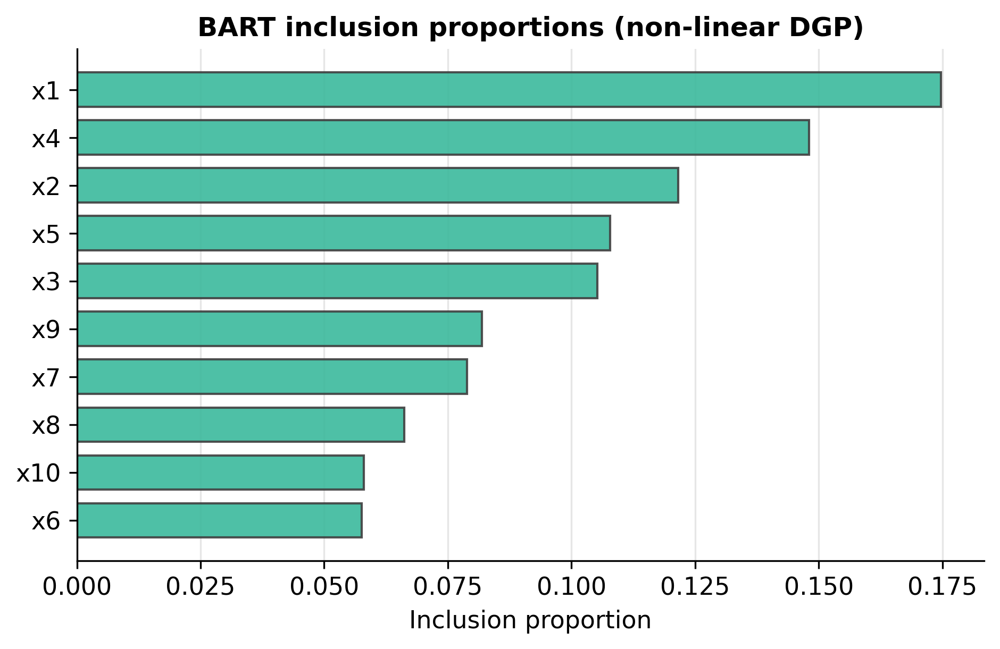
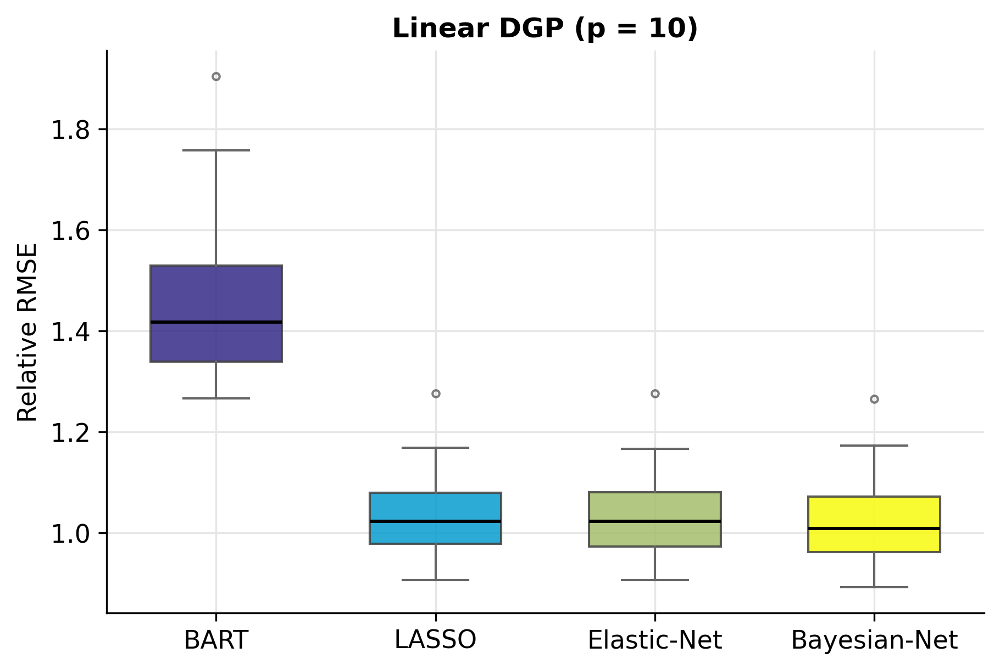
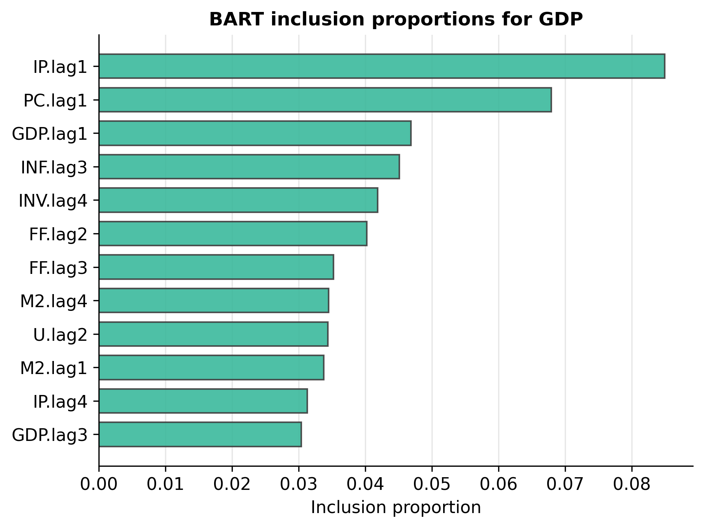
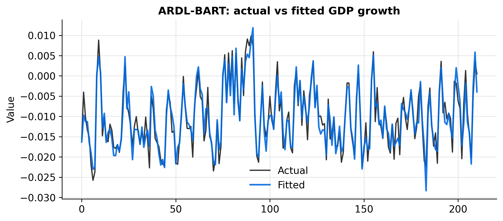
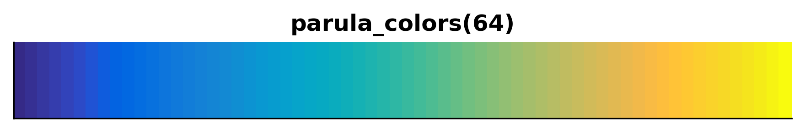

A faithful, self-contained Python implementation of Mahdavi, Ehsani,
Ahelegbey & Mohammadpour (2024),
Measuring Causal Effect with ARDL-BART
(Applied Mathematics15, 292–312). It replaces the linear conditional
mean of an ARDL equation with a sum of Bayesian regression trees, so lag effects
may be non-linear and interactive — then benchmarks it against LASSO, Elastic Net
and a Bayesian-network selector.
🌲
Faithful BART
Sum-of-trees with the exact priors of Chipman, George & McCulloch (2010):
tree prior $\alpha(1{+}d)^{-\beta}$, conjugate-normal leaves, $(\nu,q)$-calibrated
error prior. Pure NumPy — no external engine.
🔁
ARDL layer
One equation per target, every variable at lags $1{\dots}p$, with the paper's
stationarity transforms built in.
🧮
Drop-in competitors
LASSO, Elastic Net and a spike-and-slab Bayesian network share one interface —
swap them into the ARDL mean freely.
📊
Journal graphics
RMSE box plots, inclusion-proportion bars, actual-vs-fitted overlays, and
LaTeX / HTML / console tables in the MATLAB Parula palette.
🧪
Reproduces the paper
Friedman simulations and the eight-variable US-macro application, with an
offline dataset so every example runs without a network.
🎓
Teaching-ready
A 32-frame colour lecture and a full developer guide ship in the repo.
Get started
Installation
pip install bartardl
# optional: live FRED download for the real macro data
pip install "bartardl[fred]"
Or from source:
git clone https://github.com/merwanroudane/bartardl.git
cd bartardl
pip install -e ".[dev]"
import bartardl as ba
data = ba.load_macro() # stationary US macro panel (8 vars)
model = ba.ARDLBART( # ARDL(4) with a BART conditional mean
n_lags=4,
estimator=ba.BART,
estimator_kwargs=dict(n_trees=100, n_burn=500, n_draws=500, random_state=0),
)
res = model.fit(data, target="GDP")
print("In-sample RMSE:", ba.rmse(res.y_train, res.fitted))
print(res.top_features(5)) # 5 most influential lagged regressors
In-sample RMSE: 0.0019
feature variable lag importance
PC.lag1 PC 1 0.0892
IP.lag1 IP 1 0.0760
GDP.lag1 GDP 1 0.0601
U.lag3 U 3 0.0402
INF.lag3 INF 3 0.0401
The model
A little theory
The ARDL equation
For a target $y$ and a system of $K$ variables, every variable enters at lags
$1,\dots,p$ and equations are estimated one at a time:
The unknown $f$ is approximated by an ensemble of $m$ shallow regression trees,
$$ f(\mathbf{x}) \approx \sum_{l=1}^{m} g(\mathbf{x};\,T_l,\,M_l), $$
where $T_l$ is a tree of split rules and $M_l$ its leaf values.
Three priors do the regularising — they keep every single tree a weak learner
so signal is built up additively:
Tree structure
A node at depth $d$ splits with probability
$\alpha(1+d)^{-\beta}$ — defaults $\alpha{=}0.95$, $\beta{=}2$ keep trees shallow.
Leaf value
$\mu \sim N(0,\tau)$ with
$\tau=\big(0.5/(k\sqrt m)\big)^2$; $k{=}2$.
Error variance
$\sigma^2 \sim \text{InvGamma}(\nu/2,\nu\lambda/2)$,
with $\lambda$ from a $q$-quantile rule ($\nu{=}3,\ q{=}0.9$).
The posterior is drawn by Bayesian back-fitting MCMC: each sweep proposes a
grow or prune move per tree, then re-samples the leaves and $\sigma^2$.
Variable importance is the inclusion proportion — the share of all splitting
rules that use each predictor.
Kept honest. The paper's “ARDL” is the distributed-lag
regression (no bounds test / error-correction), and “causal effect” is
operationalised as forecasting + variable importance. The
developer guide
reconciles this point by point.
Evidence
Results & plots
Simulation — non-linear DGP (BART wins)
Relative RMSE, $p=10$ (lower is better)
method
mean
median
Q.50
Q.75
BART
2.554
2.534
2.534
2.735
LASSO
2.750
2.741
2.741
2.951
Elastic-Net
2.753
2.743
2.743
2.951
Bayesian-Net
2.727
2.714
2.714
2.939

RMSE across 100 Monte-Carlo runs — BART lowest.

BART inclusion proportions concentrate on the five relevant predictors $x_1,\dots,x_5$.
Simulation — linear DGP (linear selectors win)
Relative RMSE, $p=10$
method
mean
median
Q.50
Q.75
BART
1.474
1.418
1.418
1.530
LASSO
1.033
1.023
1.023
1.080
Elastic-Net
1.033
1.023
1.023
1.080
Bayesian-Net
1.023
1.009
1.009
1.072
A method that won everywhere would be suspicious — BART's
edge is specifically non-linearity.

Under a linear truth the penalised regressions are unbeatable.
Empirical — eight US macro series
Table 3 — variables & stationarity transforms
ID
FRED
code
description
GDP
GDPC1
5
real gross domestic product
INF
CPIAUCSL
5
consumer price index
FF
FEDFUNDS
2
federal funds rate
M2
M2SL
5
money stock M2
PC
PCECC96
5
real personal consumption
IP
INDPRO
5
industrial production
U
UNRATE
2
unemployment rate
INV
GPDIC1
5
real private investment
code 2 = first difference, 5 = first difference of log. ARDL(4) ⇒ 8×4 = 32 regressors per equation.
BART ranks #1 for 6 of 8 targets; the linear selectors take the two (near-)linear series.

What drives GDP — BART inclusion proportions.

Actual vs fitted GDP growth.
Tutorial
How to write the code
A start-to-finish walk-through. Every estimator shares one interface —
fit(X, y), predict(X), and an importance attribute — so the
pieces compose cleanly.
1
Load a stationary panel
load_macro() returns the eight variables already differenced per the
Table-3 codes. Use source="fred" for live data.
import bartardl as ba
data = ba.load_macro() # DataFrame, 255 x 8
data.head()
2
Build one ARDL equation
Pick the lag order and the conditional-mean estimator. Passing the classba.BART means each equation gets a fresh model.
model = ba.ARDLBART(
n_lags=4,
estimator=ba.BART,
estimator_kwargs=dict(n_trees=200, n_draws=1000, random_state=0),
)
res = model.fit(data, target="GDP")
3
Read the fit and the drivers
The result exposes fitted values, residuals, and the inclusion-proportion
importance as a tidy frame.
Same call, different estimator — LASSO, Elastic Net, or the Bayesian network.
for est, kw in [(ba.Lasso, {}), (ba.ElasticNet, {}),
(ba.BayesianNetwork, dict(n_iter=2000, burn=1000))]:
r = ba.ARDLBART(n_lags=4, estimator=est, estimator_kwargs=kw).fit(data, "GDP")
print(est.__name__, ba.rmse(r.y_train, r.fitted))
5
Run the horse-race and rank
Loop over targets and methods, forecast a hold-out tail, and build the ranking table.
H = 40; train = data.iloc[:-H]
methods = {
"BART": (ba.BART, dict(n_trees=200, n_draws=1000, random_state=0)),
"LASSO": (ba.Lasso, {}),
"Elastic-Net": (ba.ElasticNet, {}),
"Bayesian-Net": (ba.BayesianNetwork, dict(n_iter=2000, burn=1000, random_state=0)),
}
rmse_by_target = {}
for tgt in data.columns:
rmse_by_target[tgt] = {}
for name, (est, kw) in methods.items():
m = ba.ARDLBART(n_lags=4, estimator=est, estimator_kwargs=kw).fit(train, tgt)
pred = m.predict(data, tgt).iloc[-H:]
rmse_by_target[tgt][name] = ba.rmse(data[tgt].loc[pred.index], pred)
print(ba.ranking_table(rmse_by_target)) # -> Table 4
6
Simulate to stress-test
The Friedman DGPs let you check where BART helps.
draws = {"BART": [], "LASSO": []}
for rep in range(100):
tr = ba.friedman(n=100, p=10, kind="nonlinear", random_state=rep)
te = ba.friedman(n=100, p=10, kind="nonlinear", random_state=1000+rep)
for name, est in [("BART", ba.BART(random_state=0)), ("LASSO", ba.Lasso())]:
est.fit(tr.X, tr.y)
draws[name].append(ba.relative_rmse(te.y, est.predict(te.X), 1.0))
print(ba.simulation_table(draws))
7
Make publication figures
The viz module returns Matplotlib axes; colours come from the Parula palette.
from bartardl import viz
from bartardl.colors import parula_colors, get_cmap
viz.rmse_boxplot(draws, title="Non-linear DGP (p = 10)")
viz.inclusion_plot(res.importance, res.feature_names, top=12,
title="BART inclusion proportions for GDP")
print(viz.journal_table(ba.ranking_table(rmse_by_target), fmt="latex"))
parula_colors(8) # ['#352a87', '#0268e1', ...]

parula_colors(64) — the MATLAB R2014b Parula colormap.
Match the paper exactly:ba.BART(n_trees=200, k=2, nu=3, q=0.9, alpha=0.95, beta=2, n_draws=20000, n_burn=250)
Reference
API at a glance
The estimator protocol
call
returns
meaning
est.fit(X, y)
self
fit on arrays X (n,p), y (n,)
est.predict(Xnew)
ndarray
point predictions
est.importance_
ndarray
per-feature weights (BART: inclusion_proportion_)
BART parameters
parameter
default
meaning
n_trees
200
number of trees $m$
k
2.0
leaf-prior width (shrinkage)
nu, q
3.0, 0.90
$\sigma^2$ prior d.o.f. and quantile
alpha, beta
0.95, 2.0
tree prior $\alpha(1+d)^{-\beta}$
n_draws, n_burn
1000, 1000
retained draws / burn-in
random_state
None
seed
Fitted attributes & helpers
member
meaning
BART.inclusion_proportion_
variable importance, sums to 1
BART.yhat_train_draws_
full posterior of the training fit (for 95% bands)
@article{mahdavi2024ardlbart,
author = {Mahdavi, Pegah and Ehsani, Mohammad Ali and
Ahelegbey, Daniel Felix and Mohammadpour, Mehrnaz},
title = {Measuring Causal Effect with {ARDL-BART}: A Macroeconomic Application},
journal = {Applied Mathematics}, year = {2024},
volume = {15}, pages = {292--312}, doi = {10.4236/am.2024.154018}
}
@software{roudane_bartardl,
author = {Merwan Roudane},
title = {bartardl: Non-parametric ARDL modelling with BART},
url = {https://github.com/merwanroudane/bartardl}
}